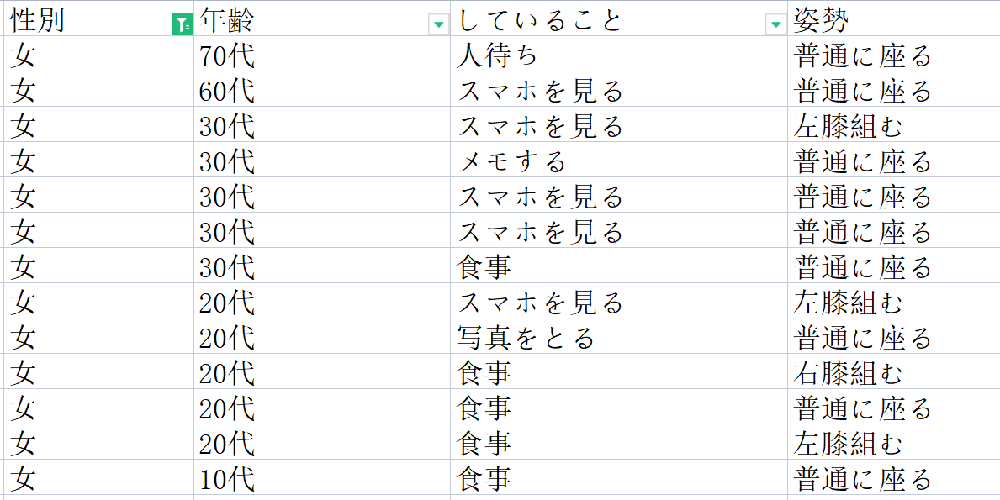
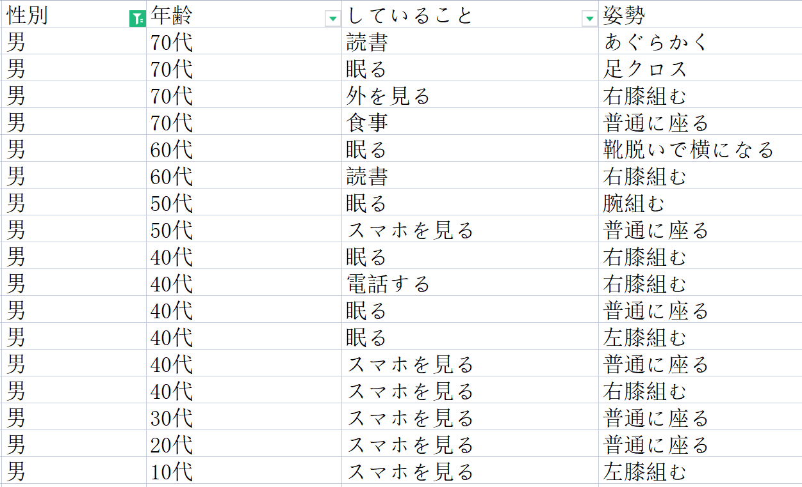
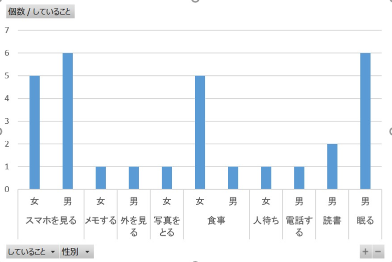
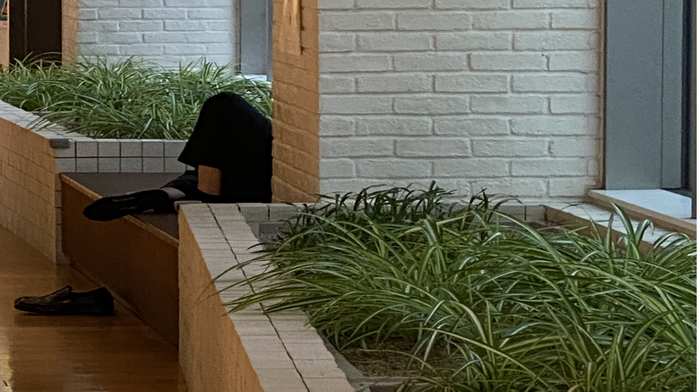

3班 観察の実践
観察テーマ：衣食住の「住」
観察内容：座っている人が何をしているか
観察時間：2021/10/19 14:30～15:30
場所：マークイズみなとみらい
観察の結果：

女性：13人
スマホを見る：5人（38%） 食事：5人（38%） メモする：1人（8%） 写真を撮る：1人（8%） 人待ち：1人（8%）

男性：17人
スマホを見る：6人（35％） 眠る：6人（35％） 読書する：2人（12%） 電話する：1人（6%） 外を見る：1人（6%） 食事：1人（6%）

棒グラフ
男女ともスマホを見る割合が多かったですが、女性は特に食事、男性は特に眠る人も多かったです。
